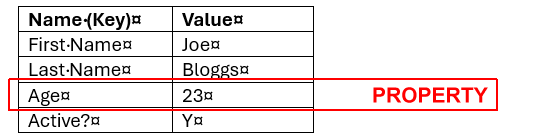
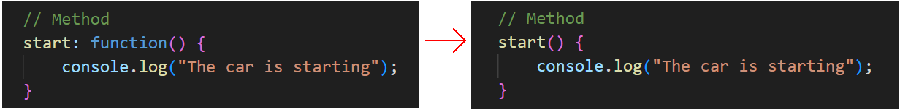
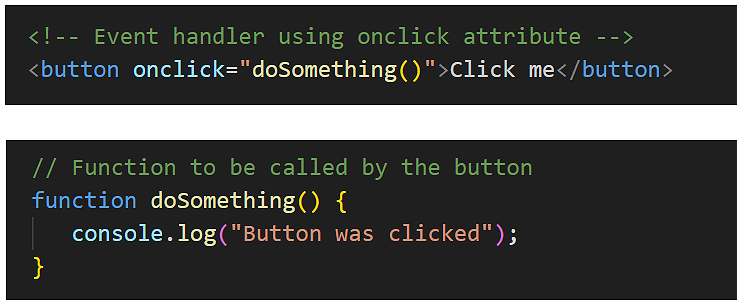

Learning Goals
At the end of this Tutorial, you will be able to:
- Understand how functions can be attached to objects as methods
- Work with the built-in Event object and its methods
- Use the addEventListener() method to handle user interactions
- Access properties of event objects
- Implement event delegation for efficient event handling
- Understand event bubbling and how to control it
Download a new workfile on your computer as described at the link below.
Objects and methods
In a previous Introduction to objects Tutorial, you learned that an object is JavaScript is a named container for key-value pairs, with each pair known as a property.
In the above example, the object has four properties, each one with a property key (such as Age) and a property value (such as 23).
In addition to properties, an object can also have functions attached to it. These functions are called methods.
Here's a simple example:
// Object with both properties and a method
const car = {
// Properties
make: "Toyota",
model: "Corolla",
year: 2024,
// Method
start: function() {
console.log("The car is starting");
}
};
// Calling the method
car.start(); // The car is startingIn the example above, start is a method of the car object.
Note that the function in the object is an example of an Anonymous function because it is defined without a name.
This syntax can be shortened to the following:
The event object
JavaScript includes several built-in objects. One of these is the event object, which represents something that happens in a web browser, such as:
- A user clicking a button
- A web page finishing loading
- A form being submitted
- A key being pressed on the keyboard
In a previous Working with the DOM Tutorial, you learned how to use event handlers like onclick to respond to user actions:
The Event object provides a more flexible way to handle events using the addEventListener() method. This method takes two arguments:
- The type of event to listen for (such as 'click', 'mouseover', etc.)
- The function to call when the event occurs
Here's how to rewrite the previous example using addEventListener():
First, add this to the HTML part of your events.html workfile.
<button id="myButton" class="btn-blue">Click me</button>
Next add the following JavScript code.
// Get the button element
const button = document.getElementById('myButton');
// Add event listener
button.addEventListener('click', function(event) {
console.log("Button was clicked");
});Using addEventListener() has several advantages:
- You can add multiple event listeners to the same element
- You can easily remove event listeners when needed
- You keep your JavaScript code separate from your HTML
Accessing event properties
When an event occurs, JavaScript creates an event object containing information about the event. You can access this information by adding a parameter to your event handler function:
// Accessing event properties
button.addEventListener('click', function(event) {
// Access properties of the event object
console.log(event.target.id); // ID of clicked element
console.log(event.target.className); // Classes of clicked element
console.log(event.type); // Type of event ('click')
});The event.target property refers to the element that triggered the event.
In modern JavaScript the event object is usually represented by the single letter e and an arrow function. See below.
button.addEventListener('click', (e) => {
// Access properties of the event object
console.log(event.target.id); // ID of clicked element
console.log(event.target.className); // Classes of clicked element
console.log(event.type); // Type of event ('click')
});And finally, because ee is the only parameter of the arrow function, you need not type the parenthesis ().
button.addEventListener('click', e => {
// Access properties of the event object
console.log(event.target.id); // ID of clicked element
console.log(event.target.className); // Classes of clicked element
console.log(event.type); // Type of event ('click')
});Event delegation
Event delegation is a technique where instead of adding event listeners to individual elements, you add a single event listener to a parent element. This is particularly useful when you have multiple similar elements that need the same event handling.
Here's an example:
<div id="buttonContainer">
<button class="btn" data-color="red">Red</button>
<button class="btn" data-color="green">Green</button>
<button class="btn" data-color="blue">Blue</button>
</div>// Event delegation
// Get the container element
const container = document.getElementById('buttonContainer');
// Add single event listener to container
container.addEventListener('click', function(event) {
// Check if clicked element is a button
if (event.target.classList.contains('btn')) {
const color = event.target.dataset.color;
console.log(`Selected color: ${color}`);
}
});The data-color is an example of a data attribute. These are attributes in HTML that allow you to store extra information on any HTML element. They always start with data- followed by whatever name you choose. They are accesse din JavaScript with the dataset property.
Benefits of event delegation:
- Reduces the number of event listeners needed
- Works for dynamically added elements
- Uses less memory
Preventing event bubbling
When an event occurs on an element, it first runs handlers on that element, then on its parent, then all the way up to other ancestors. This process is called event bubbling.
Here's an example to demonstrate bubbling:
<div id="outer">
<div id="inner">
<button id="myButton">Click me</button>
</div>
</div>
document.getElementById('myButton').addEventListener('click', function(event) {
console.log('Button clicked');
});
document.getElementById('inner').addEventListener('click', function(event) {
console.log('Inner div clicked');
});
document.getElementById('outer').addEventListener('click', function(event) {
console.log('Outer div clicked');
});When you click the button, you'll see all three messages because the event bubbles up through the DOM tree.
You can stop event bubbling using event.stopPropagation():
document.getElementById('myButton').addEventListener('click', function(event) {
console.log('Button clicked');
event.stopPropagation(); // Stops the event from bubbling up
});Try it yourself
In your workfile...
---
Create a list of items (<ul> with several <li> elements).
Use event delegation to handle clicks on any list item.
When an item is clicked, change its text color.
---
Create three nested <div> elements with different background colors.
Add click event listeners to each div.
Experiment with event bubbling and stopPropagation().
---
Create a button that changes its text when clicked.
Add both a click and mouseover event listener to the same button.
The mouseover should change the button's background color.
Sample AI prompts
Explain the difference between event bubbling and event capturing in JavaScript. When would you use one over the other?Compare and contrast using inline event handlers (onclick="") versus addEventListener(). What are the pros and cons of each approach?Show me how to implement event delegation for a dynamic list where items can be added or removed. What are the benefits of this approach?